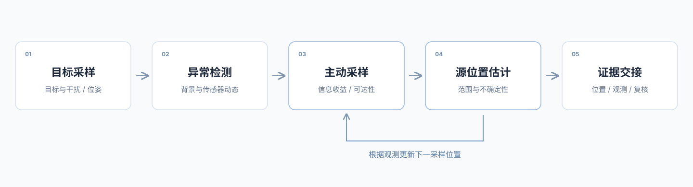
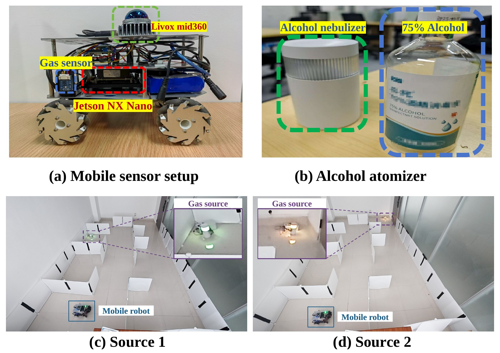
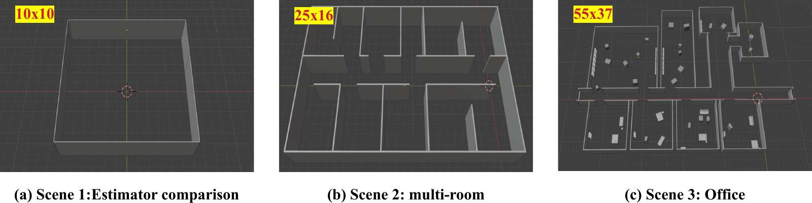

什么信号能够可靠检出
限定目标与背景条件，研究交叉响应、温湿度、基线变化和传感器动态，建立可重复的测量依据。
公共空间安全 · 移动机器人 · 跨学科合作
Autonomous Robotic Inspection and Hazard Source Localization
for Explosive and Chemical Threat Prevention in Public Spaces
研究提案 · 正在寻找跨学科研究伙伴
ABSTRACT
本项目面向高铁站、地铁站和机场等公共空间的防爆防化任务，拟将室内自主跨楼层导航、目标适配的气体感知与主动溯源结合起来。机器人通过多位置采样发现疑似危险信号，逐步缩小来源范围，为专业人员提供可复核的位置线索与观测依据。
研究围绕目标信号的可靠检出、受空间约束的主动采样、来源不确定性估计及任务交接展开。首期以一处室内区域、一类明确目标和单机器人原型为起点，先建立可测性，再通过受控实验与合作场景评价完整任务的有效性。
研究阶段：公共空间目标物的检测与定位能力将单独验证；现有室内乙醇实验作为技术基础。专业人员负责最终复核与处置。
APPLICATION SCENARIOS
从允许进入、能够采样、可以确认来源的室内区域开始，与合作方共同确定首期任务。
围绕经授权进入的设备间、维护通道及相邻楼层，研究异常观测的复测与来源范围缩小。
试点输入：具体检查任务、目标样本、常见干扰、允许采样的位置及专业复核方式。
PROPOSED APPROACH
把目标感知、移动决策和来源估计组织成连续的巡检过程。

限定目标与背景条件，研究交叉响应、温湿度、基线变化和传感器动态，建立可重复的测量依据。
结合通行时间、楼层连通、可达性和信息收益，选择下一检查位置，并与固定巡检路线对照。
融合气体观测、机器人位姿、空间几何与可用气流信息，更新来源估计并保留不确定性。
把来源范围关联至可检查对象，提供时间、位置、观测和未覆盖区域，评价专业人员接手后的可用性。
EXISTING RESEARCH FOUNDATION
两项已有研究分别提供室内移动能力与气体源定位经验，为本提案的系统集成与场景验证提供起点。
围绕四足机器人在三维室内空间中的通行，已有研究覆盖走廊、窄门和带障碍物的楼梯。它为机器人到达检查区域、通过楼层连接并执行采样任务提供移动基础。
Unitree Go2 EDU、Livox Mid360 与 Jetson Orin NX 机载计算。
稿件报告三类实机场景，每类重复 10 次；楼梯实验仍出现感知盲区相关失败。
为检查区域间通行、楼层连接和采样位置执行提供导航基础。
这项研究要解决的问题是：机器人在室内发现气体异常后，怎样进一步找到释放源的位置？已有工作让机器人在不同位置采样，将气体响应与地图中的位置对应起来，逐步形成源位置估计，供后续检查。
从探索到定位，前一阶段的空间信息会延续到后一阶段。在尚未确认气体信号时，机器人先探索可通行区域，并保留经过位置与空间连通信息；发现信号后，再结合这些已有空间记录建立候选来源范围。后续移动围绕补充观测、减少来源不确定性展开，最终输出源位置估计，而不是在第一次出现响应时就结束任务。
下图展示了现有实验系统：轮式机器人搭载 BME680 金属氧化物气体传感器、Livox Mid360 激光雷达与 Jetson 机载计算。实验使用可控的乙醇释放源；机器人一边移动，一边记录气体响应和所在位置，再将估计位置与实际源位置进行对照。

两次实机运行都从探索进入了源位置估计阶段，并给出了靠近放置源的位置结果。下表说明这两次运行实际记录了什么。另一次对照运行在探索目标耗尽后结束，没有进入定位阶段；它提示我们，“走过可见空间”本身并不能保证获得足够的气体观测。
| 记录项 | 运行 1 | 运行 2 |
|---|---|---|
| 轨迹记录时长 | 191.6 s | 307.6 s |
| 累计行驶距离 | 7.7 m | 14.6 m |
| 估计位置与放置源的距离 | 0.37 m | 0.08 m |
源放置位置约有 0.3 m 不确定性，0.08 m 应理解为与放置位置一致，不能据此宣称厘米级精度。记录时长不是独立核验的自动定位耗时；两次运行也不能代表稳定成功率。传感器使用 MOX 相对响应，尚未作为目标物定量浓度测量。
除实机可行性研究外，项目还在单房间、多房间和办公室布局中开展仿真，分别考察发现气体前的搜索、发现后的来源估计，以及更复杂空间中的完整任务。下图给出这些测试环境，帮助说明验证覆盖的空间范围。

这项工作为本提案提供的是“移动采样—估计来源位置”这一环节的实验基础。下一步拟将它与 GlocalNav 的跨楼层通行能力结合，让机器人能够到达不同检查区域并执行采样。当前实机实验使用的是轮式平台和乙醇源；四足平台整合，以及防爆防化目标物的感知与定位，仍是后续需要验证的内容。
图文依据：From Exploration Memory to Source Belief 稿件中的实验系统、测试场景与运行记录。
下一步：在明确目标物与试点条件后，将跨楼层通行、目标适配传感与主动采样整合，并评价完整巡检任务及专业交接的有效性。
PROCEDURAL BUILDINGS · NAVIGATION & SENSOR REPLAY
切换建筑与路线，沿跨楼层参考路径观察房间、楼梯和窄桥，同步查看 RGB、深度与激光雷达的几何观测。
VALIDATION & DELIVERABLES
与合作方确定场所、目标、检查流程和来源确认方式。
任务定义与需求依据比较目标、背景与干扰，建立参考测量和跨日期数据。
样本库与采样规范集成导航、主动采样、来源估计及完整任务记录。
单机器人原型与对照实验开展小范围重复验证，收集专业人员的交接反馈。
验证报告与交接模板评价重点：独立任务检出率、误报次数、全部任务的定位误差、形成可交接结果的时间，以及专业人员的复核结果。
首期从非危险替代物及可控实验开始。具体目标、试点条件与验收要求由专业合作方共同确定。
JOIN THE RESEARCH
欢迎带着你的专业经验加入，共同把具体任务、测量依据和机器人系统做扎实。
室内导航、主动规划、概率估计与系统集成。
MOX或电子鼻、材料释放、采样、标定及参考分析。
时序观测、异常检测、数据规范与独立验证。
真实需求、场所对接、专业检测与任务复核流程。